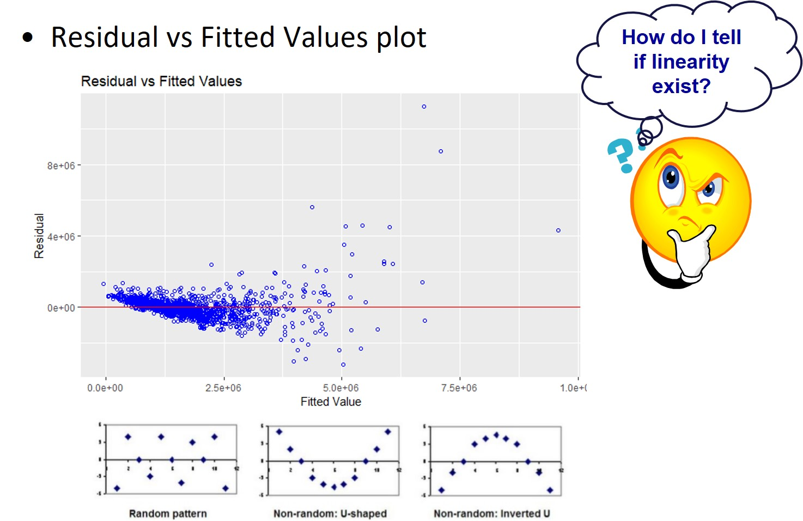
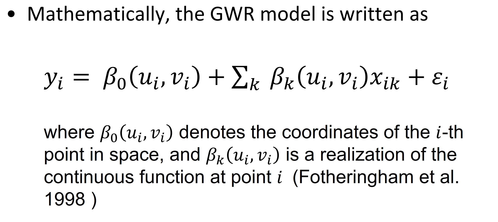

Dr. Kam Tin Seong Assoc. Professor of Information Systems(Practice)
School of Computing and Information Systems, Singapore Management University
Published
12 Mar 2023
Content
Introducing Regression Modelling
Simple Linear Regression
Multiple Linear Regression
What is Spatial Non-stationary
Introducing Geographically Weighted Regression
Weighting functions (kernel)
Weighting schemes
Bandwidth
Interpreting and Visualising
The WHY Questions
Why some condominium units were transacted at relatively higher prices than others?
The WHY Questions
Why condominium units located at the central part of Singapore were transacted at relatively higher prices than others?
What is regression analysis?
A set of statistical processes for explaining the relationships among variables.
The focus is on the relationship between a dependent variable (y) and one or more independent variables (x)
Does X affect Y? If so, how?
What is the change in Y given a one unit change in X?
Estimate outcomes based on the relationships modelled.
A Simple Linear Regression Model
The formula:
The Least Squares Method
The sum of the vertical deviations (y axis) of the points from the line is minimal.
Multiple Linear Regression
Assessing the goodness of fit
Significance testing in regression
Goodness of fit test
Individual parameter testing
Assessing individual parameters
Are there redundant explanatory variables?
Assumptions of linear regression models
Linearity assumption. The relationship between the dependent variable and independent variables is (approximately) linear.
Normality assumption. The residual errors are assumed to be normally distributed.
Homogeneity of residuals variance. The residuals are assumed to have a constant variance (homoscedasticity).
The residuals are uncorrelated with each other.
serial correlation, as with time series
(Optional) The errors (residuals) are normally distributed and have a 0 population mean.]
The linearity assumption
The linearity assumption
Residuals vs Fitted plot - Used to check the linear relationship assumptions. A horizontal line, without distinct patterns is an indication for a linear relationship, what is good.

Demystifying the linearity assumption myth
The myth: - We should transform the values of the y variable when they are large.
Attaching package: 'sjmisc'
The following object is masked from 'package:purrr':
is_empty
The following object is masked from 'package:tidyr':
replace_na
The following object is masked from 'package:tibble':
add_case
library(sjlabelled)
Attaching package: 'sjlabelled'
The following object is masked from 'package:forcats':
as_factor
The following object is masked from 'package:dplyr':
as_label
The following object is masked from 'package:ggplot2':
as_label
library(olsrr)
Attaching package: 'olsrr'
The following object is masked from 'package:datasets':
rivers
Rows: 100 Columns: 3
── Column specification ────────────────────────────────────────────────────────
Delimiter: ";"
chr (1): group
dbl (2): x, y
ℹ Use `spec()` to retrieve the full column specification for this data.
ℹ Specify the column types or set `show_col_types = FALSE` to quiet this message.
data1.lm <-lm(formula=y ~ x, data = data1)tab_model(data1.lm)
Despite the values of the dependent variable is rather similar to the values of the independent variable, the diagnostic plot shows that the linearity assumption has been violated.
ols_plot_obs_fit(data1.lm, print_plot =TRUE)
Data transformation come to rescue
data.lm2 <-lm(formula=y ~exp(x), data = data1)tab_model(data.lm2)
The diagnostic plot on the right shows that the linearity assumption has been conformed.
ols_plot_obs_fit(data.lm2, print_plot =TRUE)
The normality assumption
Warning
This is the test on the residual and not on the dependent variable.
Checking for serial correlation
The purpose of this test is to ensure the residuals of a multiple regression are time independent.
Spatial Non-stationary
When applied to spatial data, as can be seen, it assumes a stationary spatial process.
The same stimulus provokes the same response in all parts of the study region.
Highly untenable for spatial process.
Why do relationships vary spatially?
Sampling variation
Nuisance variation, not real spatial non-stationarity.
Relationships intrinsically different across space
Real spatial non-stationarity.
Model misspecification
Can significant local variations be removed?
Some definitions
Spatial non-stationarity: the same stimulus provokes a different response in different parts of the study region.
Global models: statements about processes which are assumed to be stationary and as such are location independent.
Local models: spatial decompositions of global models, the results of local models are location dependent – a characteristic we usually anticipate from geographic (spatial) data.
Spatial Autocorrelation assumption
The residuals are assumed to be distributed at random over geographical space.
Test of spatial autocorrelation
To test if the relationships in the model are non-stationary.
lm.morantest() of spdep package will be used.
Geographically Weighted Regression (GWR)
Local statistical technique to analyze spatial variations in relationships.
Spatial non-stationarity is assumed and will be tested.
Based on the “First Law of Geography”: everything is related with everything else, but closer things are more related.
Geographically Weighted Regression (GWR): The method

Calibration of GWR
Local weighted least squares
Weights are attached with locations
Based on the “First Law of Geography”: everything is related with everything else, but closer things are more related than remote ones
Calibration - Weighting functions
Calibration - Weighting functions
Calibration - Weighting schemes
Determines weights
Most schemes tend to be Gaussian or Gaussian-like reflecting the type of dependency found in most spatial processes.
Brunsdon, C., Fotheringham, A.S. and Charlton, M., (1999) [“Some Notes on Parametric Significance Tests for Geographically Weighted Regression”](https://onlinelibrary-wiley-com.libproxy.smu.edu.sg/doi/abs/10.1111/0022-4146.00146. Journal of Regional Science, 39(3), 497-524.